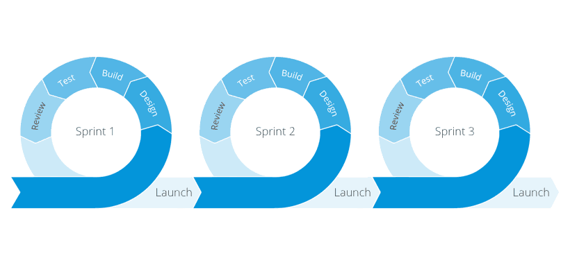
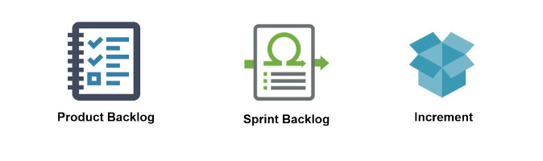
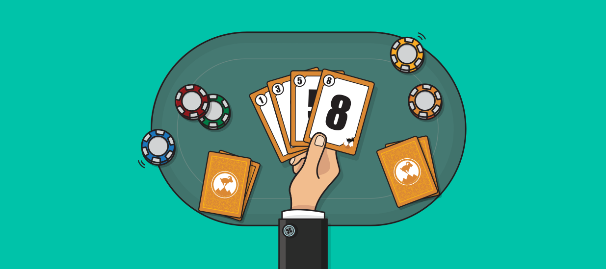
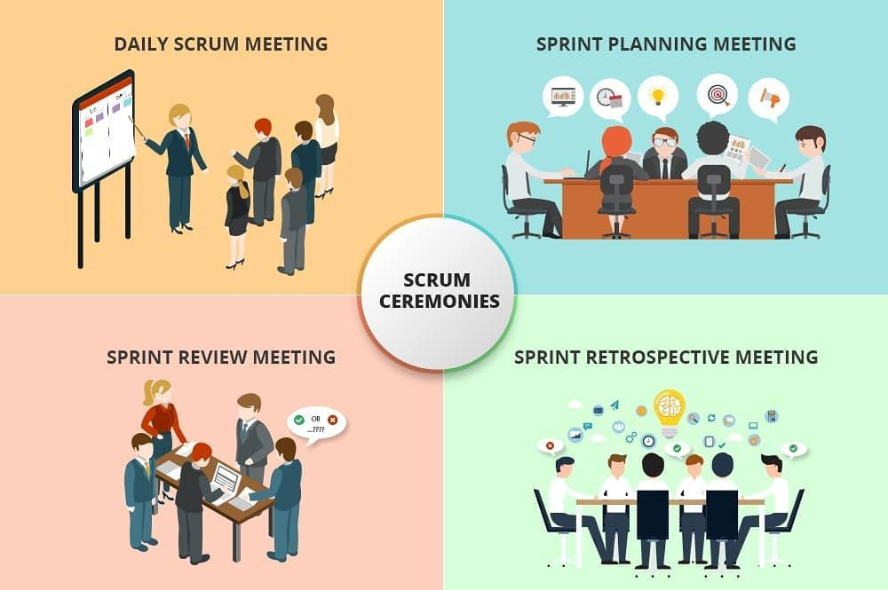
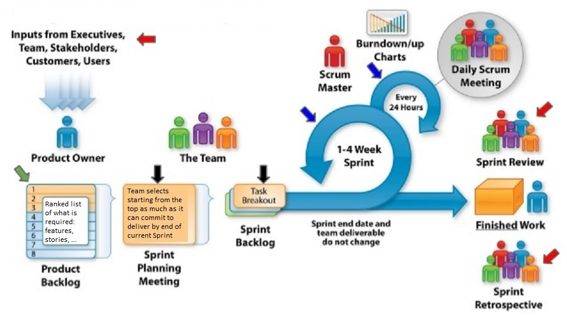

AGILE & SCRUM
by Pavel Tsitou
Manifesto for Agile Development
🔹Individuals and interactions over processes and tools
🔹Working software over comprehensive documentation
🔹Customer collaboration over contract negotiation
🔹Responding to change over following a plan
- To be agile means to:
- have a self organized team with better interactions and improved communication inside the team;
- focus of development to be on creating a working software that delivers business values in each iteration;
- have a real customers' collaboration in order to offer them the possibility to provide continuous feedback during development;
- be flexible and respond ASAP to scope changes.
The Difference Between Agile and Scrum

The concepts of Scrum and Agile are often confused because that Scrum is built around the idea of constant improvement, which is the main principle of Agile
Agile is a project management philosophy that utilizes a core set of values or principles Scrum is a specific Agile methodology that is used to facilitate a project
Scrum team

👩🏼💼Product owner - manages and prioritizes features in product backlog. His goal is to understand business, customer's and market's requirements
👨🏻💻Development team - is a self-organizing team that includes about 3-9 members which goal is to deliver a quality product that meets the needs of the users
👨🏼🏫Scrum Master - creates an environment conducive to team self-organization, facilitates the Scrum process, helps to resolve impediments, shields the team from external interference and distractions
Sprint
Sprint is a set period of time during which specific work has to be completed and made ready for review
Sprint plaining
📊📆Sprint planning is an event in scrum that kicks off the sprint.
The purpose of sprint planning is to define what can be delivered in the sprint and how that work will be achieved.
Sprint planning is done in collaboration with the whole scrum team.
Scrum Artifacts
Product Backlog – is an always changing, dynamically prioritized list of requirements ordered by Business Value. Requirements are broken down into User Stories by the Product Owner
Sprint Backlog - contains all committed User Stories for the current Sprint broken down into Tasks by the Team. All items on the Sprint Backlog should be developed, tested, documented and integrated to fulfill the Team commitment.
Product increment is the customer deliverables that were produced by completing product backlog tasks during a sprint. It also includes the increments of all previous sprints.
Extended artifacts
🟡Burndown Chart - used to communicate and track progress toward the sprint goal during the sprint. Burndown charts are graphs that display tasks completed over the duration of a sprint
🟡The definition of “done” - helps define the boundaries of an increment.
User Story
A user story is an informal, general explanation of a software feature written from the perspective of the end user or customer.
The purpose of a user story is to articulate how a piece of work will deliver a particular value back to the customer.
- Stories keep the focus on the user
- Stories enable collaboration
- Stories drive creative solutions
- Stories create momentum
User stories serve a number of key benefits:
User stories are often expressed in a simple sentence, structured as follows:
“As a [persona], I [want to], [so that].”Estimation
“Good estimation helps product owners optimize for efficiency and impact. That's why it's so important” (c) Dan Radigan
Planning Poker
Planning Poker is an agile estimating and planning technique that is consensus based. Each estimator is holding a deck of Planning Poker cards with possible values (Fibonacci numbers). The values represent the number of story points, ideal days, or other units.
🔺Story Points🔺
Story Points - are relative values, a story that is estimated with 2 story points should be twice as much as items that are estimated with 1 story point
Story points represent the effort to develop a story and this includes everything that can affect the effort including amount, complexity and risks associated with this work
- Each User Story must:
- be created by using the above template;
- respect INVEST rule;
- have a set of acceptance criteria;
- be estimated by the team in Story Points by using Playing Poker technique.
Scrum Ceremonies
- Daily Stand-up
- Backlog Grooming
- Sprint Planning
- Sprint Review/Demo
- Sprint Retrospective
Scrum Overview
Benefits and Limitations
- Increased product quality
- Enhanced transparency
- Increased flexibility
- Reduced risks
- Maximized productivity
- Improved communication
- Maximized cooperation
🟢Benefits🟢
- It requires extensive training
- It can be difficult to scale
- It may require major transformations within the organization
- It can be difficult to integrate with a classic project management approach
- It is not related to the project's deadline
- It requires the use of small teams
- It requires experienced personnel